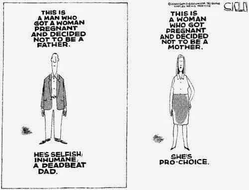
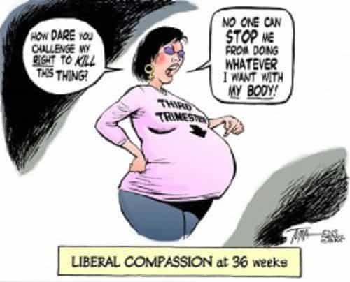

It has been sometimes said that men should not have a say concerning the issue of abortion given that they are not directly affected by it. Indeed, since men cannot suffer the direct consequences of pregnancy, many feminists have claimed that men should thus keep their mouths shut about the whole abortion issue. And you just have to Google this general theme to find several articles from feminists which argue for this point-of-view.
However, in opposition to this idea, what I wish to argue is that far from men needing to be silent about assessing the morality and legality of abortion, it is, in fact, women who should butt out of the abortion debate. And while such an idea, given the times that we live in, might seem radical, there is actually a very good reason for it.

Does this chick look like she could give you a coherent argument for abortion? I don’t think so.
So, to understand why women should stay out of the debate about the moral and/or legal permissibility of abortion, consider the issue of jury selection during a criminal or civil trial. First, note the fact that a jury’s goal and purpose is to seek the truth and follow the evidence presented to it in the most objective manner possible. Now, with this in mind, imagine that we have a criminal trial where a male defendant has been accused of raping a woman.
In such a situation—and given that, as mentioned, the goal of a jury is to seek the truth as objectively as possible—we all understand that it would be unsound and unjust to allow a woman on the jury for that trial if the woman in question had also previously been raped by a man in the same way that is alleged to have happened in the trial presently under consideration. And why do we all know that this would be a bad and irrational idea? Because the potential female juror who had been previously raped, due to her past history, would obviously not be as objective and impartial as would be required to properly serve on such a jury.
Indeed, we all understand that the woman’s emotional and psychological proximity to the type of trial under consideration would cloud her objectivity and render her a partial, rather than an impartial jury member. Furthermore, we all understand why such a woman would not be as objective as was needed for jury duty: namely, because an emotionally and psychologically clouded mind is a mind that is more susceptible to motivated reasoning and cognitive biases. And so that is why such a woman could not be trusted to fairly assess such a rape case.

But even more examples can be given. For instance, we all also understand that a jury member would not be allowed to be a family member of an accused individual given that no one would expect or could sufficiently guarantee that a family member would be objective in their assessment of the evidence against their relative. In fact, even the trial judge would have to recuse himself if he had a conflict of interest with the case under consideration due to the potential biases and motivated reasoning that trying such a case might raise.
And so we can see, via all these examples, how a person’s emotional and psychological proximity to a certain situation actually renders them less objective about the arguments that they are considering; furthermore, such close proximity actually gives us a solid reason to be more leery of such a person’s assessment concerning a certain issue rather than being more trusting of their assessment.
Note as well that social science also supports the above illustrations. For example, in his book The Righteous Mind, and specifically in his chapter “Vote for Me (Here’s Why)”, popular social psychologist Johnathan Haidt notes that when self-interest and/or reputational concerns are in play, people are very good at finding evidence which supports a position that they already hold, most likely for intuitive reasons. What this means is that when self-interest is involved, as well as when discussing emotionally charged topics, people are very good at confirmation bias and motivated reasoning.

Now, with the above points in mind, the connection with the abortion issue should be clear. In the debate over abortion, we are seeking to objectively and fairly assess the status of the unborn human being, both in a moral and a legal sense. We are also seeking to assess, as objectively as possible, whether abortion is murder, thus establishing whether it is permissible or not. We are even assessing whether abortion is a social good or not. So these are damn serious issues—just as serious as weighing the evidence during a murder trial.
Consequently, we should all wish that the individuals assessing these topics concerning abortion be as objective as possible. But, in all these debates, a woman is like a compromised juror who would be rejected as a jury member precisely because she could not be counted on to be as objective as possible about the evidence under consideration; indeed, for it is the woman’s very emotional, psychological, and self-interested proximity to these abortion issues which makes her assessment of them less trustworthy rather than more trustworthy. And this is because there would be a very good chance that a woman would be suffering from serious cognitive biases in her assessment of the evidence concerning abortion and the status of the unborn.
After all, women themselves admit that they are the ones who are directly influenced by the emotional, psychological, and physical effects of pregnancy and abortion. And so, whether knowingly or not, they themselves are the ones who are tacitly acknowledging that they would have an increased susceptibility to cognitive bias and motivated reasoning concerning the topic of abortion.
By contrast to women, men are not directly affected by the issue of abortion. Men are also less emotionally, psychologically, and personally invested in it, as many women themselves admit; after all, that is often why women argue that men should have no say about abortion to begin with. But because of all this, a very strong case can be made that men are actually more objective evidence assessors concerning the issue of abortion and its potential immorality than women are. Indeed, men, given their ability to remain more detached about the issue of abortion, can actually be more trusted to give an impartial assessment of the evidence concerning the humanity of the unborn. And thus men can give a fairer assessment of whether abortion is murder or not.
Exactly…which means that men are less biased and less prone to motivated reasoning about the abortion issue.
And so, the long and short of it is this: although men are sometimes told that their views about abortion should not count because they are not directly affected by pregnancy and abortion, it is actually a woman’s very emotional and psychological proximity to the issue of abortion which makes her cognitive-bias-prone opinion about abortion less objective and less trustworthy than that of a man. And so, if anyone should be ignored concerning the matter of abortion, it is women. But if women should be listened to about the abortion issue—and, in the end, they actually should be—then no one should dare say that the abortion arguments from men should not be listened to as well.
Read More: Are Women Careless With Contraception Because They Love The Attention From Getting An Abortion?